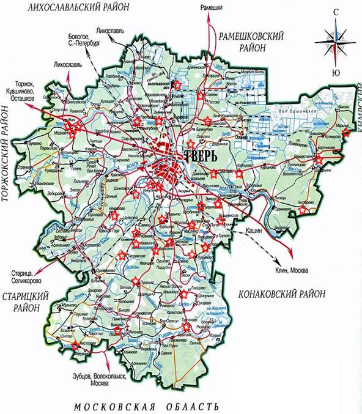

| В базу поисковой системы электронной Книги Памяти Тверской области на www.history.tver.ru занесены данные 46 воинов 119, 247, 256, 359, 375 стрелковых дивизий, погибших и умерших от ран в боях за г. Калинин и при освобождении территории Калининского района в октябре - декабре 1941 года. Их имена внесены в списки захороненных братских могил в пос. Эммаус, пос. Бурашево, дер. Аксинькино, дер. Алексеевское, дер. Каблуково, с. Ильинское, дер. Некрасово, дер. Смолино, дер. Щербинино, дер. Чуприяновка, дер. Кузьминское, дер. Обухово, дер. Квакшино, дер. Пушкино, дер. Цветково.
Выражаем благодарность работнику отдела военного комиссариата Тверской области по Калининскому району Костюк И.П., Главе администрации Бурашевского с/п Румянцеву С.А., Главе Бурашевского с/п Рожкову С.Е. за активную работу по увековечению памяти погибших защитников Отечества.
Список воинов.
Старший политрук АГАПОВ Григорий Ильич
Красноармеец БУСЫРЕВ Николай Иванович
Красноармеец БУТЕЕВ Петр Яковлевич
Красноармеец БЫКОВ Николай Семенович
Младший политрук ВАСИЛЬЕВ Иван Васильевич
Красноармеец ГАМЗИКОВ Александр Андреевич
Младший политрук ГЕРАСИМОВ Дмитрий Лаврентьевич
Красноармеец ГОРБУНОВ Михаил Андреевич
Красноармеец ГОРБУНОВ Михаил Андреевич
Красноармеец ДОРОШОК (ДОРОШКО) Павел Яковлевич
Младший политрук ЖИЛО Павел Ильич
Красноармеец ИВАНОВ Алексей Иванович
Красноармеец КОВАЛЕВ Петр Иванович
Красноармеец КОВАЛЕНКО Иван Алексеевич
Красноармеец КОВАЛЕНКО Михаил Поликарпович
Старший политрук КОЖИНОВ Григорий Иосифович
Политрук КОТКИН Давид Самойлович
Политрук КУНГУРЦЕВ Павел Алексеевич
Красноармеец ЛЕОНТЬЕВ Петр Матвеевич
Политрук ЛЕТУПА Григорий Николаевич
Красноармеец МИРЕШКО
Красноармеец МОНИН Дмитрий Степанович
Красноармеец МУЩИНКИН Климентий Филонтьевич
Красноармеец НАКАРЯКОВ Иван Яковлевич
Красноармеец НИФАНТОВ Андрей Ильич
Красноармеец НОВАК Василий Арсеньевич
Младший политрук ПАРШИН Леонид Иванович
Политрук ПЕЛЕВАН Михаил Иванович
Политрук ПИСКАРЕВ Иван Михайлович
Красноармеец ПИЧУГИН Виктор Яковлевич
Красноармеец ПЛЕХАНОВ Василий Иванович
Младший воентехник ПОВЕТИН Виктор Михайлович
Воздушный стрелок-радист РАБОТА Василий Яковлевич
Сержант САБИТОВ Харис
Красноармеец САБУРОВ Аким Акимович
Сержант СИБГАТОВ Хази Сибгатович
Красноармеец СМИРНОВ Степан Григорьевич
Заместитель политрука СМИРНОВ Юрий Иванович
Красноармеец СОБОЛЕВ Иван Васильевич
Младший политрук ТРУСОВ Виктор Григорьевич
Красноармеец УЖЕГОВ Николай Александрович
Красноармеец ФЕДОРОВ Иван Федорович
Красноармеец ФИЛИМОНОВ Георгий Алексеевич
Красноармеец ЧОКАЛЬ Игнат Кононович
Красноармеец ШАШИН Николай Андреевич
Красноармеец ШЕПТАЕВ Петр Петрович
Красноармеец ЮДИН Варлам Матвеевич

|